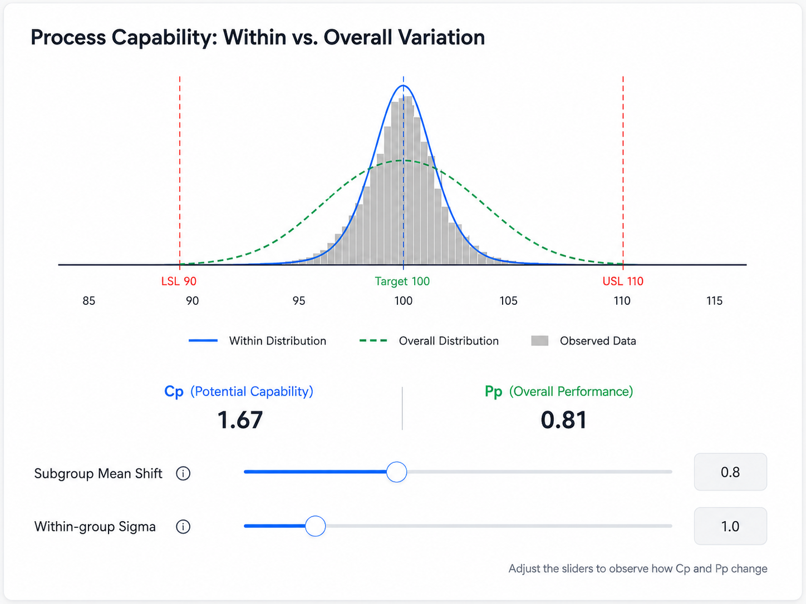

快速结论
- Cpk 高不代表制程已经具备稳定量产条件。
- Cp/Cpk 观察组内变异，Pp/Ppk 观察整体变异。
- 能力指数必须结合控制图、MSA 和数据代表性解释。
- Cpk 与 Ppk 的差距是组间、批次间或时间相关额外变差的调查线索。
- 能力指数可以支持放行决策，但不能自动替代放行决策。
核心结论
一个漂亮的 Cpk 可能只代表短时间、单一条件下的表现；NPI 放行还要确认整体变异、制程稳定性和数据代表性。
工程注意
Cpk 与 Ppk 的差距提示需要调查组间变异，但不能单独证明某一个具体根因。
常见误区
Cpk 达到 1.33 并不自动意味着过程可以放行，也不能只为了提高指数而放宽公差。
从组内变异与整体变异看 NPI 放行
在 NPI 试产评审中，供应商经常会提交一个看起来不错的 Cpk，例如 1.33、1.67，甚至更高。
但 Cpk 高，并不代表制程已经具备稳定量产的条件。
设备可能在同一班次、同一批材料、同一名操作员和较短的生产时间内表现良好。一旦进入多班次、多批次和连续生产，材料差异、设备调整、环境变化和人员操作带来的波动就会逐渐显现。

因此，制程能力分析不能只看 Cp 和 Cpk，还需要同时观察 Pp、Ppk、控制图以及数据的分组方式。
Cp/Cpk 与 Pp/Ppk 的区别
两组指标最主要的区别，不只是“短期”和“长期”，而是标准差的估算方式不同。
Cp/Cpk：基于组内变异
Cp 和 Cpk 通常使用合理子组内的变异来估算制程标准差。它们更接近回答：
在相对一致的生产条件下，这个制程有没有能力把产品做好？
例如，同一台设备在较短时间内连续生产，同一子组中的产品受到的生产条件比较接近。此时计算出的组内变异，主要反映设备、工装和制程本身的重复性。
- Cp 反映制程变异宽度与规格宽度之间的关系；
- Cpk 在 Cp 的基础上，进一步考虑制程均值是否偏向某一侧规格限。
因此，即使 Cp 很高，如果制程均值已经靠近 USL 或 LSL，Cpk 仍然可能较低。
Pp/Ppk：基于整体变异
Pp 和 Ppk 使用全部观测数据的整体标准差。整体变异可能同时包含：
- 不同生产班次之间的差异；
- 不同材料批次之间的差异；
- 不同设备、模穴或工装之间的差异；
- 换模、换线或重新调机后的偏移；
- 操作人员差异；
- 环境条件变化；
- 随时间发生的均值漂移。
它们更接近回答：
在当前采集到的实际生产条件下，这个制程表现得怎么样？
当试产数据覆盖了有代表性的生产条件时，Pp 和 Ppk 通常更接近未来量产中的实际表现。
为什么 Cpk 高，Ppk 仍然可能很低？
假设一台设备在每个短时间段内都很稳定，单个子组中的产品离散程度也很小。
如果白班、夜班、不同材料批次或不同模穴之间存在均值偏移，那么把所有子组的数据放在一起后，整体分布就会变宽。
这时可能出现：
- 组内分布较窄；
- 整体分布明显变宽；
- Cp/Cpk 较高；
- Pp/Ppk 明显较低；
- 控制图中出现均值漂移、趋势或分层现象。
这说明设备在单一条件下可能有能力做好产品，但当前制程还没有能力在不同生产条件下持续保持相同表现。问题不一定出在设备精度，也可能出在材料控制、换线管理、参数设定、班次差异或现场执行。
控制图与能力分析需要一起看
能力指数本身不能判断制程是否稳定。
例如，一组数据计算得到 Cpk 1.67，但控制图中已经出现连续上升、周期性波动或超出控制限的数据点。这个 Cpk 只能描述当前样本的分布，不能证明未来的制程表现可以持续。
在进行能力分析前，通常应先确认：
- 制程是否处于统计受控状态；
- 是否存在特殊原因变异；
- 子组之间是否存在明显的均值偏移；
- 数据是否按照真实生产顺序保留；
- 采样是否覆盖了未来量产的主要条件。
控制图回答的是“制程是否稳定”，能力指数回答的是“当前变异与规格之间的关系”。两者不能互相替代。
四种常见的分析结果
1. Cp/Cpk 和 Pp/Ppk 都较低
这种情况通常说明组内变异和整体变异都比较大，或者制程均值已经明显偏离目标。常见原因包括设备或工装精度不足、工艺参数窗口过窄、测量系统误差过大、制程均值没有正确居中，以及产品公差与现有工艺能力不匹配。
此时不应直接进入量产放行。需要先确认测量系统，再评估设备、工艺、材料和产品规格。如果现有工艺确实无法满足规格，应由研发、质量和制造共同判断，是改善工艺、提升设备能力，还是基于功能和风险验证重新评估规格。不能仅仅为了提高 Cpk 而放宽公差。
2. Cp/Cpk 较高，但 Pp/Ppk 明显较低
这说明制程在相对一致的条件下有能力做好，但实际生产中的组间变异较大。常见原因包括白班与夜班差异、材料批次造成均值变化、换模或换线后参数偏移，以及不同设备、模穴或工装之间的差异。
重点不是马上更换设备，而是找出组间变异的来源。改善措施可能包括增加首件确认、锁定关键工艺参数、建立换线和换模验证、加强材料批次监控、分设备或分模穴分析，以及明确异常后的反应计划。是否可以放行，仍需要结合产品风险、临时控制措施和剩余风险判断。
3. Cp、Pp 较高，但 Cpk、Ppk 较低
这说明制程的离散程度可能不大，但均值已经偏向某一侧规格限。例如，产品尺寸整体集中在 USL 附近。虽然数据分布很窄，但只要均值稍有漂移，就可能产生大量超差。主要改善方向是重新调整制程中心，而不是单纯降低变异。
4. Cpk 与 Ppk 都较高，而且数值接近
这种结果通常说明组内变异较小、组间变异也较小、制程均值位置相对合理，当前数据中没有明显的长期漂移。如果控制图同时保持稳定，测量系统可靠，试产数据也覆盖了未来量产的主要条件，那么这组结果可以作为 NPI 放行的重要证据。但它仍然不是唯一的放行依据。
在看能力指数之前，先确认两个前提
测量系统是否可靠
如果量具的重复性和再现性不足，Cp、Cpk、Pp 和 Ppk 中包含的可能是测量误差，而不是真实的制程变异。对于关键尺寸和关键质量特性，在进行能力分析前，应确认测量系统已经通过适当的 MSA 验证。
子组是否合理
合理子组的目的，是让同一子组中的产品尽可能来自相近的生产条件，同时让不同子组能够暴露随时间、班次、批次或设备产生的变化。
如果把不同模穴、不同设备或不同材料批次的数据随意混在同一个子组中，组内标准差可能失去原有的工程意义。反过来，如果供应商只在一个小时内，使用同一批材料和相同生产条件集中取样，即使得到较高的 Cpk，这组数据也未必能够代表未来量产。
Cp/Cpk 与 Pp/Ppk 的差异，本质上取决于组内和整体标准差的估算方式，而不是单纯由采样时间决定。
NPI 放行时，不能只问 Cpk 是否达到 1.33
在量产放行评审中，更应该关注以下问题：
- 数据是否来自稳定的制程？
- 测量系统是否能够可靠地区分产品变异？
- 样本是否覆盖不同班次、设备、模穴和材料批次？
- Cpk 与 Ppk 之间是否存在明显差距？
- 差距来自组间偏移、均值漂移，还是测量问题？
- 当前试产条件是否能够代表未来量产？
- 对于关键特性，是否已经建立足够的控制和反应计划？
能力指数可以支持放行决策，但不能自动替代放行决策。即使 Cpk 达到目标，如果数据代表性不足、制程尚未稳定，或者 Ppk 明显偏低，仍然需要继续改善或补充验证。相反，如果部分指标暂时没有达到目标，也不能只看一个数字下结论，还需要结合产品风险、失效后果、改善计划、临时控制措施和后续验证安排进行判断。
总结
Cp/Cpk 更接近回答：
这个制程在相对一致的条件下，有没有能力做好？
Pp/Ppk 更接近回答：
在当前实际生产条件下，这个制程做得怎么样？
对于 NPI 来说，真正重要的不是拿到一个漂亮的 Cpk，而是确认数据是否稳定、是否有代表性，以及当前的制程控制能否在量产中持续执行。只有把组内变异、整体变异、控制图和实际生产条件放在一起分析，能力指数才真正具有工程意义。